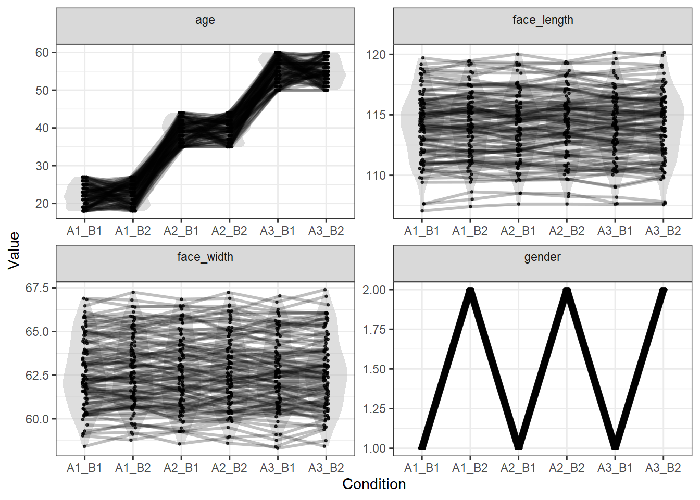

In a factorial design, rather than splitting on a single variable, it is common to manipulate multiple independent variables to create a design that allows you to test an interaction. In this example, I show how you might create stimuli for a 3 (age: young, middle, old) x 2 (gender: female, male) design.
library(tidyverse)
library(LexOPS) # package with functions for item-wise matchingstim_pool <- read_csv("stim_pool.csv")Here, we’ll create stimuli for a 3 (age: young, middle, old) x 2 (gender: female, male) design, controlling for face width and face length. To split by both independent variables, we can just call split_by() an additional time:
stim <- stim_pool %>%
set_options(id_col = "stim_id") %>%
# create the three levels of age
split_by(age, 1:28 ~ 35:45 ~ 50:100) %>%
split_by(gender, "f" ~ "m") %>%
# control for all variables
control_for(face_width, -1:1) %>%
control_for(face_length, -1:1) %>%
generate(n=100, seed=42, match_null="inclusive")## Generated 5/100 (5%). 130 total iterations, 0.04 success rate.
Generated 10/100 (10%). 332 total iterations, 0.03 success rate.
Generated 15/100 (15%). 400 total iterations, 0.04 success rate.
Generated 20/100 (20%). 502 total iterations, 0.04 success rate.
Generated 25/100 (25%). 571 total iterations, 0.04 success rate.
Generated 30/100 (30%). 745 total iterations, 0.04 success rate.
Generated 35/100 (35%). 845 total iterations, 0.04 success rate.
Generated 40/100 (40%). 941 total iterations, 0.04 success rate.
Generated 45/100 (45%). 1009 total iterations, 0.04 success rate.
Generated 50/100 (50%). 1134 total iterations, 0.04 success rate.
Generated 55/100 (55%). 1328 total iterations, 0.04 success rate.
Generated 60/100 (60%). 1438 total iterations, 0.04 success rate.
Generated 65/100 (65%). 1521 total iterations, 0.04 success rate.
Generated 70/100 (70%). 1708 total iterations, 0.04 success rate.
Generated 75/100 (75%). 1878 total iterations, 0.04 success rate.
Generated 80/100 (80%). 2027 total iterations, 0.04 success rate.
Generated 85/100 (85%). 2120 total iterations, 0.04 success rate.
Generated 90/100 (90%). 2216 total iterations, 0.04 success rate.
Generated 95/100 (95%). 2410 total iterations, 0.04 success rate.
Generated 100/100 (100%). 2671 total iterations, 0.04 success rate.This gives us a list of matched sets of faces for six conditions:
stim## # A tibble: 100 x 8
## item_nr A1_B1 A1_B2 A2_B1 A2_B2 A3_B1 A3_B2 match_null
## <int> <chr> <chr> <chr> <chr> <chr> <chr> <chr>
## 1 1 face_4720 face_2385 face_2936 face_3338 face_3547 face_1367 <NA>
## 2 2 face_4047 face_2087 face_1650 face_489 face_3257 face_1226 <NA>
## 3 3 face_178 face_1384 face_530 face_4097 face_2029 face_1752 <NA>
## 4 4 face_3949 face_2209 face_3909 face_602 face_2745 face_3200 <NA>
## 5 5 face_1783 face_4638 face_1579 face_1465 face_2163 face_1806 <NA>
## 6 6 face_3295 face_4898 face_4752 face_3637 face_4156 face_1613 <NA>
## 7 7 face_157 face_917 face_1688 face_3086 face_4868 face_1747 <NA>
## 8 8 face_976 face_634 face_2458 face_1251 face_4558 face_1623 <NA>
## 9 9 face_1466 face_4666 face_4294 face_3402 face_4892 face_1812 <NA>
## 10 10 face_4514 face_890 face_297 face_3105 face_2888 face_79 <NA>
## # ... with 90 more rowsWe can check the values for each item with long_format():
long_format(stim)## # A tibble: 600 x 8
## item_nr condition match_null stim_id gender age face_width face_length
## <int> <chr> <chr> <chr> <fct> <dbl> <dbl> <dbl>
## 1 1 A1_B1 <NA> face_4720 f 23 62.1 114.
## 2 1 A1_B2 <NA> face_2385 m 27 63.0 114.
## 3 1 A2_B1 <NA> face_2936 f 43 63.0 114.
## 4 1 A2_B2 <NA> face_3338 m 41 62.4 113.
## 5 1 A3_B1 <NA> face_3547 f 54 62.1 114.
## 6 1 A3_B2 <NA> face_1367 m 56 62.2 113.
## 7 2 A1_B1 <NA> face_4047 f 26 62.0 110.
## 8 2 A1_B2 <NA> face_2087 m 24 62.4 110.
## 9 2 A2_B1 <NA> face_1650 f 40 62.0 110.
## 10 2 A2_B2 <NA> face_489 m 44 61.7 110.
## # ... with 590 more rowsWe can look at the quality of the matching of the numeric values with plot_design():
plot_design(stim)
This shows the expected result, with all six conditions matched for face width and face length, whereas age and gender differ.